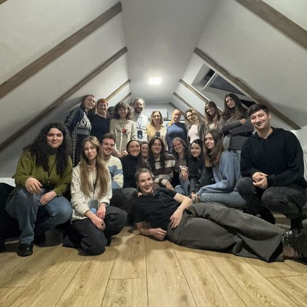

No items found.

Sănă:tos la Minte
Proiectul Sănă:tos la Minte a luat naștere în toamna anului 2024, în urma identificării nevoii tinerilor sibieni de a exista mai multe evenimente care să se concentreze pe sănătatea mintală, concluzie extrasă după aplicarea analizei de nevoi din cadrul primului proiect al Diviziei, „Și cu noi...cum rămâne?”. Un efect de domino foarte mișto, am spune!
Acesta se axează pe organizarea de workshop-uri interactive, care au în centru teme de interes din sfera sănătății mintale. De fiecare dată, experți din acest domeniu, specializați pe diferite nișe, de exemplu, lucrul cu adolescenții, adicțiile, tulburările mintale, moderează întâlnirile și combină componenta teoretică cu cea practică.
Fiecare workshop se desfășoară lunar, are o tematică specifică și un anumit grup țintă, pentru ca întreg procesul, inclusiv dinamica grupului, să fie echilibrat. Câteva dintre tematicile deja abordate sunt următoarele: „Sunt același după pandemie? Efectele post-pandemice asupra tinerilor”, „Sănătatea emoțională în relații - explorarea intimității și a conectării”, „Redescoperirea masculinului și femininului”, „Communication is the key. Chiar și la job” și „(De)conectat. Relația cu social media”.
Diversitatea, una dintre valorile noastre de bază, se reflectă inclusiv ăn alegerea tematicilor de interes pentru noi, tinerii. Many more to come, țineți aproape!
„Mens sana in corpore sano”, motto-ul proiectului, rezumă perfect ceea ce ne dorim să transmitem și să construim împreună constant - un echilibru între minte și corp, ce are la bază susținerea grupului și dorința de dezvoltare personală continuă.